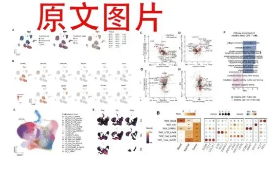
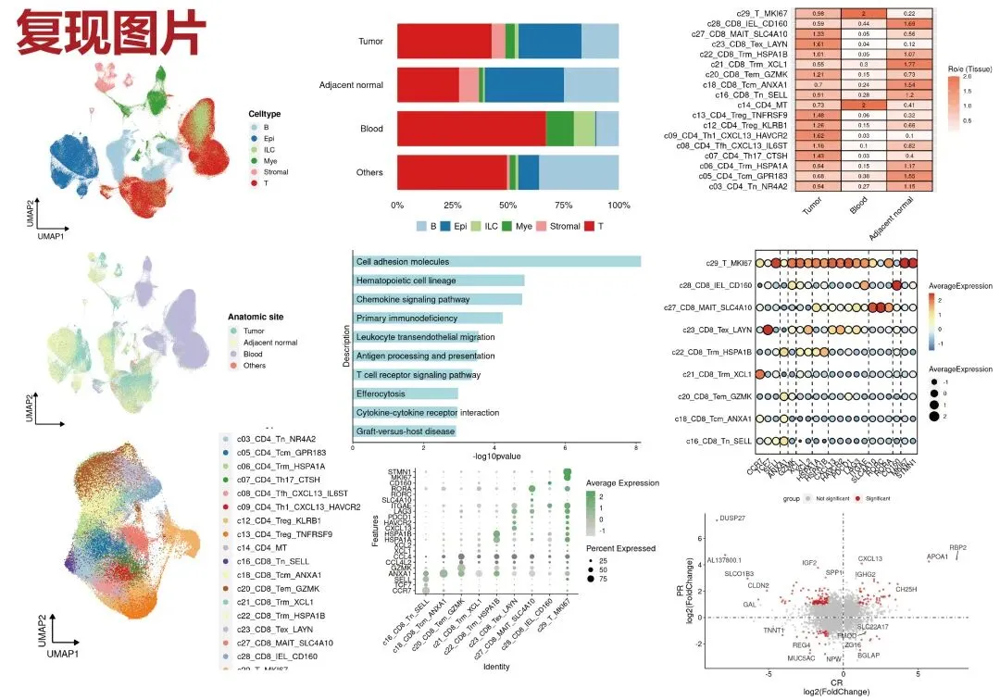
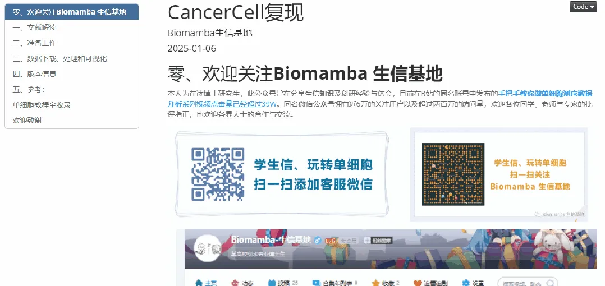
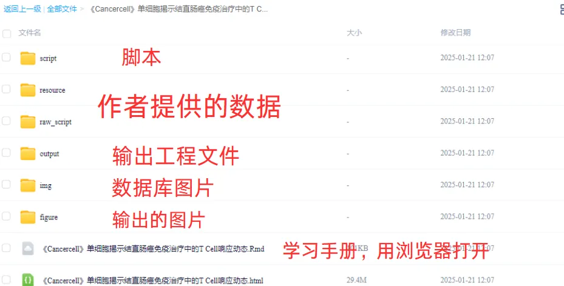

《Cancer Cell》|时空单细胞揭示CRC的PD-1治疗免疫细胞动态
原文：https://mp.weixin.qq.com/s?__biz=MzAwMzIzOTk5OQ==&mid=2247528056&idx=1&sn=73c0da3ff7ff50bafbb9315fd5b60f15&chksm=9b3c1728ac4b9e3ea3d3a35b9a60d5b21f74fe08671da8388c60ed43ba310617e6c48566b54a#rd 合集：单细胞教程全收录 / 全文复现

学习手册

 本次教程中，我们复写了题为"Spatiotemporal single-cell analysis decodes cellular dynamics underlying different responses to immunotherapy in colorectal cancer "的文章(DOI:https://doi.org/10.1016/j.ccell.2024.06.009)。扩大免疫检查点阻断（ICB）在结直肠癌（CRC）中的疗效迫切需要全面了解治疗反应。本文分析了** 22** 名接受 PD-1 阻断的患者的多个连续单细胞样本，以绘制 CRC 患者局部和全身免疫的演变图。在肿瘤中，发现了表现出不同反应关联的协调细胞程序。主要发现包括：（1）耗竭的T(Tex) 或肿瘤反应性样CD8+ T(Ttr样)细胞与治疗效果密切相关，并且在 PD-1 阻断后，Tex细胞与多种其他肿瘤富集细胞类型显示出相关的比例变化。（2）揭示了肿瘤中血液相关Ttr样细胞的较少耗尽表型，并发现它们的丰度较高表明治疗结果更好。（3）基线时循环CD8+ T细胞中较高的主要组织相容性复合体(MHC) II相关特征与优异的反应相关。（4）提供了对 CRC 新辅助 PD-1 阻断后时空细胞动力学的见解。
本教程基于R语言完成，没有基础的小伙伴可见：R语言入门课回放
本教程基于Linux中的Rstudio环境演示，计算资源不足的同学可参考：
足够支持你完成硕博生涯的生信环境
配置一个心仪的工作站(硬件+环境配置)
独享服务器，生信分析不求人
为实验室准备一份生物信息学不动产
本次教程中，我们复写了题为"Spatiotemporal single-cell analysis decodes cellular dynamics underlying different responses to immunotherapy in colorectal cancer "的文章(DOI:https://doi.org/10.1016/j.ccell.2024.06.009)。扩大免疫检查点阻断（ICB）在结直肠癌（CRC）中的疗效迫切需要全面了解治疗反应。本文分析了** 22** 名接受 PD-1 阻断的患者的多个连续单细胞样本，以绘制 CRC 患者局部和全身免疫的演变图。在肿瘤中，发现了表现出不同反应关联的协调细胞程序。主要发现包括：（1）耗竭的T(Tex) 或肿瘤反应性样CD8+ T(Ttr样)细胞与治疗效果密切相关，并且在 PD-1 阻断后，Tex细胞与多种其他肿瘤富集细胞类型显示出相关的比例变化。（2）揭示了肿瘤中血液相关Ttr样细胞的较少耗尽表型，并发现它们的丰度较高表明治疗结果更好。（3）基线时循环CD8+ T细胞中较高的主要组织相容性复合体(MHC) II相关特征与优异的反应相关。（4）提供了对 CRC 新辅助 PD-1 阻断后时空细胞动力学的见解。
本教程基于R语言完成，没有基础的小伙伴可见：R语言入门课回放
本教程基于Linux中的Rstudio环境演示，计算资源不足的同学可参考：
足够支持你完成硕博生涯的生信环境
配置一个心仪的工作站(硬件+环境配置)
独享服务器，生信分析不求人
为实验室准备一份生物信息学不动产
本教程复现集锦 ：


-Biomamba

所见即所得
学习手册以html文件格式提供，可在浏览器中打开并翻阅学习：

教程目录 ：
一、文献解读
1.0 原文回顾1.1 背景介绍1.2 主要内容
(1)PD-1 阻断后人类 CRC 的动态单细胞跨组织景观
(2)肿瘤生态系统中协调的细胞程序
(3)肿瘤中耗尽的CD8+ T细胞的反应关联
(4)PD-1阻断期间肿瘤反应样CD8+ T细胞的不同动态反映了治疗效果
(5)有效治疗干预下肿瘤反应样CD8+ T细胞的外周关联
(6)外周 T 细胞特征表明对 PD-1 阻断的反应
1.3 复现集锦
二、准备工作
2.1 硬件准备 2.2 单细胞基础
三、数据下载、处理和可视化
3.1 读取数据和信息整理3.2 技巧分享3.3 可视化3.3.1 UMAP图3.3.2 细胞比例3.3.3 Marker密度图 3.3.4 CD8T细胞亚群 3.3.5 亚群UMAP3.3.6 UMAP框选细胞群 3.3.7 细胞分组密度3.3.8 RO/e分析3.3.9 Marker气泡图 3.3.10 双组火山图3.3.11 富集分析柱状图
四、版本信息
五、 参考
六、单细胞教程全收录****
七、欢迎致谢****
文末下载链接中包含的内容：

测试文件约11.78GB ，大家注意按需下载！
解锁前需阅读：2025订阅须知
订阅后获取学习手册下载链接：